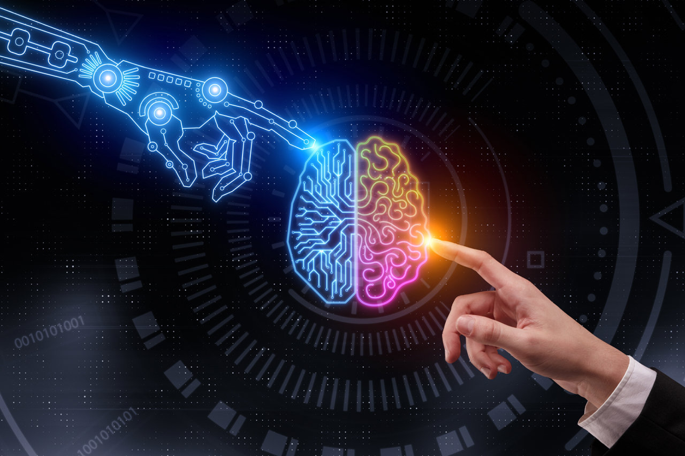

La inteligencia artificial para quienes no la usan a diario, supone un término muy ligado a lo que las historias de Hollywood y los libros de Philip K. Dick y Asimov entre otros, ha calado culturalmente, pero la realidad es que se trata de un conjunto de tecnologías no solo casi centenarias, sino además muy asentada en nuestro día a día y que ofrece soluciones muy eficaces a procedimientos que usamos sin darnos cuenta. Es por ello que, tras definir el término y los usos de la inteligencia artificial, desde elternativa nos gustaría profundizaros en su origen, los datos más relevantes, curiosidades históricas y su actual auge en sectores como el retail, la banca y los seguros entre otros.
 Cuando nos hemos referido a la IA como una tecnología casi centenaria, es debido a que su origen más primigenio se remonta a la década de los 30 del pasado siglo, ya de manos de una figura muy relevante en el desarrollo de las que conocemos hoy día como nuevas tecnologías.
Cuando nos hemos referido a la IA como una tecnología casi centenaria, es debido a que su origen más primigenio se remonta a la década de los 30 del pasado siglo, ya de manos de una figura muy relevante en el desarrollo de las que conocemos hoy día como nuevas tecnologías.
Alan Turing no solo es considerado el padre de la inteligencia artificial, sino como el precursor de la informática moderna. Ingenió numerosas soluciones basadas en computación y el uso de algoritmos para la previsión y prevención de casuísticas ya en la primera mitad de siglo, siendo una de ellas relevante para que el bando aliado ganara la II GM al ser capaz de descifrar los mensajes ocultos que los nazis se enviaban a través de la máquina Enigma.
Referecia Texto: https://www.elternativa.com/historia-inteligencia-artificial/ Referencia Imagenes: https://www.nationalgeographic.com.es/medio/2019/06/16/1956-nace-el-termino-inteligencia-artificial_c1774ad6_2000x1266.jpg https://www.nationalgeographic.com.es/medio/2022/12/29/inteligencia-artificial_8d5b40c8_221229124239_1280x853.jpg
{kind=link}
{kind=link}